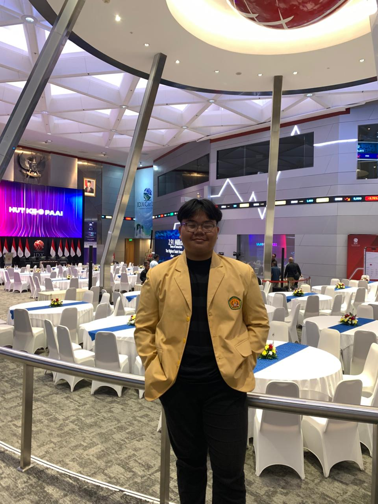

|
SELAMAT DATANG DI BEKASI
|
Muhammad Raka
home | Project | Blogs | Contact

Web Developer and Jaringan
| Portfolio Highlights | Career Achievements | Academic Qualifications |
|---|---|---|
|
Frontend Developer [Intern] at XYZ Headed major product redesigns resulting in a 40% increase in user engagement. View My LinkedIn Profile Community Involvement Active participant in local and online developer forums. Regularly contribute to web development blogs and GitHub projects. Visit My GitHub |
B.Tech (Computer Science) from ABC University Specializations:
|
MATERI HTML |
PROFILE UBHARA |
PORTOFOLIO |